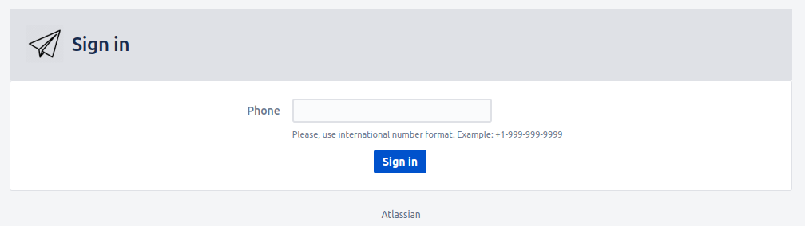

User guide. Registration
Follow the next steps to configure Telegram Integration For Jira Cloud:
Note: successful usage of Telegram Integration requires a Telegram account and created bot via BotFather.
User authorization:
-
After installing the plugin click on "Telegram plugin" on the user menu.

-
Then you need to log in to your Telegram account. Enter the phone number associated with your Telegram account in the "Phone" field and click on "Sign in" button.

-
You will receive a message with the code from Telegram. Enter the code in the "Code" field.
-
If your Two-Step verification is enabled, enter your password for it.
Congratulations! You successfully logged in to your Telegram account!
How to activate your bot:
-
After authorising your bot in Jira, you will see a link to your bot.
-
Insert it into the Telegram search field and find your Bot.
-
Press "Start" to activate the bot.
That's it! The Plugin is configured now!
Note: An Admin account and Bot are required for the plugin to work. If you press "Log out" button, the plugin will stop working! And most importantly, do not remove the bot!